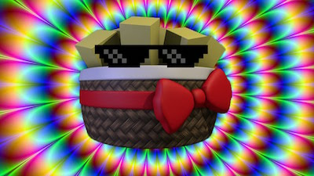

About freddy
This is the full storyline of Five Nights at Freddy's as interpreted by me, and I acknowledge that my interpretation is just one version of the story and that there could be any number of alternative ways for the story to play out, although I think it's better off this way. Since there's no definitive path for the story to take with these games, it allows us to become more creative and use our imaginations to build up an intriguing and fascinating story with these characters.
If you would like to read a shorter, more "summarized" version of the storyline, I made a shorter version as a guide on Steam: http://steamcommunity.com/sharedfiles/filedetails/?id=408444140
You can find parts 2 and 3 of this Reddit post here:
part 2: http://www.reddit.com/r/fivenightsatfreddys/comments/2z48l1/fnaf_full_storyline_explained_part_2_warning_this/
part 3: http://www.reddit.com/r/fivenightsatfreddys/comments/2z49a5/fnaf_full_storyline_explained_part_3_very_long/
Fredbear's Family Diner (1970s)
Fredbear's was a local family diner designed primarily to entertain young children through the use of animatronic animal mascots, and the diner used these characters:-
Golden Fredbear spring costume (aka Golden Freddy)
Golden Bonnie spring costume (aka Spring Bonnie, Springtrap)
Fredbear animatronic (aka Freddy Fazbear)
The Puppet/Marionette (puppet used to give out prizes to good children)
The two golden suits were designed as a 2-in-1 animatronic in that they could be used either as an animatronic or as a suit for a human to climb inside of and wear for the purpose of entertaining children. The brown Fredbear animatronic was just a regular animatronic who was designed to interact with and entertain children while the staff were not using their spring costumes.
The Puppet was used to hand out presents/prizes to children who were behaving well, (or simply those who won party games).
One day, there was a birthday party being celebrated at Fredbear's and a lone child was watching the party from outside the diner, looking in through the glass door at the front of the building. He cried continuously as he felt that he was being left out of the party since all the other kids got to play games and eat cake while he was stood alone in the cold.
Then a golden bunny appeared from behind the child and asked him why he was sad. The child explained his situation and the bunny befriended him, and he even gave the child a cupcake to make him feel better. The child ate the cupcake and then the golden bunny began to laugh. His laugh grew louder and more sinister and the child just stared at him with a puzzled look on his face, wondering what was so funny.
The child then started to feel nauseous, and he felt a great pain in his stomach. It turned out that the cupcake was poisoned and that the golden bunny was in fact a monster of a human being wearing a Bonnie spring costume. The child had been tricked, and he was to be the first in a long line of victims to the Purple Man, a future serial killer of the Fazbear pizzerias' children.
As the Purple Man cackled away, he ran back to his car, got inside and drove away from the scene in a hurry. The child couldn't stop crying and when he died, his tear tracks were still running down his face.
Since the child never got to join in with the party in life, he could not rest in death until he was united with the rest of the children to join their party. Until that happened, the child's soul would not be able to rest, and he rightfully blamed Purple Man for his predicament. The child would later seek revenge on the Purple Man and once this was done, he would then begin to find his way to the childrens' party as he would no longer have his anger to hold him back.
The child was also jealous of the other children because they won prizes and he didn't, thus his soul became trapped in the Puppet out of a desire to win a present because the Puppet was the one who had control over the gift boxes.
After this terrible tragedy occurred, the owners of Fredbear's Family Diner closed their doors forever and sold their company to a new owner in order to forget about the child murder.
Freddy Fazbear's Pizza (1980s)
A new company called "Fazbear Entertainment" was created after a new owner bought the Fredbear's Family Diner, and the diner was renamed to "Freddy Fazbear's Pizza."
The diner is converted into a pizzeria and new management is brought into the establishment, namely Phone Guy who is now the new manager of the pizzeria. He gives audio instructions to employees on how to operate the spring costumes, as well as instructing them on the safe rooms used within the building.
Despite the fact that the Purple Man had used the Golden Bonnie spring suit to murder the child, the suit was still in the back room of the diner the following day, and it had been kept there ever since. Out of respect for the deceased child and his family, the golden spring suits were not used for some time.
Two new animatronic mascots were added to the pizzeria:
Chica the Chicken
Foxy the Pirate
The company also created a blue Bonnie the Bunny animatronic to replace the golden Bonnie mascot that was originally used.
The Purple Man eventually returned to the pizzeria and killed five more children, and their bodies were stuffed into the new animatronics by the Puppet in order to give them new life so that they could help the Puppet claim his revenge on the Purple Man, as well as to fulfill his goal of joining in with the party by befriending the latest victims of Purple Man in the afterlife (this is the party we see in the "Happiest Day" mini-game in FNAF3).
The Purple Man chose to murder the five kids near Foxy's Pirate Cove as it was further towards the back of the pizzeria since it was away from the show stage (this is a trend seen in each building). The five children were never fixated on revenge like the crying child was, but they decided to play along with his game since they couldn't comprehend their actions at the same level as an adult could. They always saw it as a party game rather than an act of violence.
Since their bodies were stuffed into the animatronic suits, nobody ever found out about these five murders as the childrens' bodies were never found. However, the customers did begin to notice a foul odour coming from the suits, as well as mucus and blood pertruding from the facial area. There were also complaints of the animatronics just looking scary in general.
People soon realised that the five children were missing and that they were last seen in Freddy Fazbear's Pizza, and so this fact along with the negative vibe given off by the animatronics caused a dramatic decrease in sales for the pizzeria, thus they had to close their doors and start anew.
FNAF2 - Freddy Fazbear's Pizza (1987)
Fazbear Entertainment reopened their pizzeria in the year 1987 with a new line-up of "toy" animatronic mascots:
Toy Freddy
Toy Bonnie
Toy Chica (used to serve cake to the children)
The Mangle (used as a puzzle game for children to play)
BB (used to greet customers and hand them balloons)
These new characters were designed to restore customer confidence with the company as they were fitted with new security technology, namely facial recognition and electronic access to a criminal database of known predators. These features were included to reassure customers that their children would be safe from predators in the new and improved Freddy Fazbear's Pizza.
The Puppet was brought back since he was the only original character who never received complaints from customers, and he was tied to an electronic rail system that would allow him to move throughout the building and give prizes to children.
The original mascots were initially going to be repaired and reused in the pizzeria, but their odour and creepy look caused the company to simply keep them hidden away in the Parts and Services room to be used for spare parts wherever necessary. They were initially retro-fitted with some of the newer technology, though they were never fully repaired and this is what kept the characters "alive," or at least that was the official explanation for their strange behaviour.
Staff began to notice that the Puppet would move through the premises at night when he should have remained in the Prize Corner, and they theorized that the Puppet would be drawn to any sounds it would hear at night since there would be no children at the pizzeria at night, and so he would think that he was in the wrong room and would go to where the sound was coming from in order to try and find any nearby kids to entertain. This theory stemmed from the fact that the Puppet would sometimes be drawn to the Mangle's distorted noises at night, and so a music box was placed next to the Puppet in the Prize Corner in order to "pacify" him and keep him in his rightful place at night.
The Mangle was originally intended as a replacement for Foxy the Pirate, except that it wasn't quite as robust as the other characters and children would often take it apart, thus the pizzeria just decided to leave the Mangle in pieces and market it as a "put-it-back-together" puzzle game for the kids to play. The name "The Mangle" was coined by a member of staff since the character was always mangled up from the kids not putting it back together properly.
There were also complaints of the animatronics going into the night guard's office, thus the first night guard was moved over to the day shift and Jeremy Fitzgerald was hired as the new night guard.
Of course, the Purple Man returned once again and killed five more children at the pizzeria except this time their bodies were actually found by the police. Since their bodies could not be stuffed into the plastic toy characters as they did not use the same metal endoskeletons as the old characters, (the clue to this theory is in FNAF1's Night 5 phone call, the scrambled audio is an excerpt from a passage that describes the concept of metal having a life force that allowed it to be used as a body that housed a soul, similar to the human body) the bodies were hidden in the back room, but the Puppet picked them up and placed them throughout the restaurant to expose Purple Man's crime to authorities (hence the "SAVE THEM" mini-game, the Puppet was saving the dead kids from being stuck in limbo with him and the other possessed animatronics). Since their bodies were found, these kids' souls found peace in the afterlife and they got to go and continue the party they were having before they were murdered, thus they were able to rest in the afterlife.
Authorities deduced from surveillance footage that the dayshift guard was the murderer and that he used the classic Golden Freddy spring costume in order to lure the five children into the safe room at the back of the building and murder them without being noticed. Since customers and other animatronics were not allowed to enter the safe room, this would be the perfect place for the Purple Man to commit the murders. The Purple Man was also aware that the spring locks within the costume had become faulty due to their advanced age, and so he tore out the spring locks and endoskeleton so that he could safely wear the suit and conceal his identity. Since he could've used the safe room to do this without being seen, it's possible that the kids were murdered during the day and that the dayshift guard was framed based on the fact that he would've been the only guard there at the time of the murders. Perhaps the real Purple Man was never questioned and authorities pinned it on the dayshift guy since he would be in the office at the back of the building, thus allowing him easy access to both the Golden Freddy suit and to the safe room. Purple Man must've entered the building through the back to avoid being noticed and also to make it easier for him to reach the safe room, and he must've being wearing the same uniform as the dayshift guard in order to further incriminate him.
The real Purple Man had gotten away clean, though it is clear that he was more than likely an employee of Freddy Fazbear's Pizza since he must've had knowledge of the safe room and of the Golden Freddy suit.
Due to the fact that a Golden Freddy spring costume was used by the killer, the company banned all employees from wearing the suits in order to prevent another tragedy of this nature from happening within the establishment. Since the suits were known for having faulty spring locks, the company's official story was that the child deaths were caused by the faulty suit. The company instructed Phone Guy to sell this story and instruct all employees in the pizzeria's sister location - the FNAF1 pizzeria - to keep the suits stored in the safe room and to never wear them under any circumstances. The company did this to try and prevent the true cause of the child deaths from being known at the location of the FNAF1 pizzeria since its employees might hear about the killings in the FNAF2 pizzeria and share the story with their family and friends, so this was a business move done by Fazbear Entertainment as they were desperate to keep their customers at this point.
It is possible that Purple Guy actually worked at the FNAF1 pizzeria since the two pizzerias were around at the same time as each other, and that he decided to murder children at the FNAF2 pizzeria to make it harder for authorities to link the killings to him. It would be foolish of him to murder his victims at his own work place, don't you think?
